25/07/2022 — Một người đàn ông ở độ tuổi 50 bị suy hô hấp giảm oxy máu do viêm phổi COVID, xuất hiện đau ngực
Bản dịch tiếng Việt của bài "A man in his 50s with hypoxemic respiratory failure from COVID pneumonia develops chest pain" – Dr. Smith’s ECG Blog. Giữ nguyên toàn bộ 16 hình ảnh của bản gốc.
Gửi bởi một người giấu tên, viết bởi Parker Hambright, MD, bình duyệt bởi Meyers, Smith, McLaren
Một người đàn ông 50 mấy tuổi có tiền sử tăng huyết áp và rối loạn sử dụng thuốc lá, xét nghiệm dương tính với COVID 11 ngày trước, đến khoa cấp cứu (ED) vì khó thở tăng dần trong vài ngày. Bệnh nhân thở nhanh và giảm oxy máu, xuống thấp tới 44% với dạng sóng SpO2 được ghi nhận là tốt, trước khi đội cấp cứu ngoài viện (EMS) cho thở máy không xâm nhập, giúp cải thiện lên 85-89%. Dù bệnh sử bị hạn chế do bệnh nhân đang trong tình trạng nguy kịch, theo ghi nhận thì lúc mới đến không có đau ngực, chỉ có khó thở.
Đây là điện tâm đồ của bệnh nhân lúc đến viện, Ngày 1, khoảng 0530:

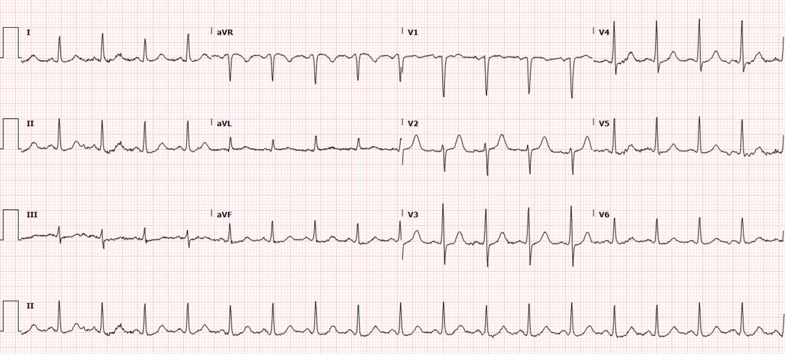
Tôi thấy ST chênh xuống nhẹ ở V3-V6, II, III, aVF, và ST chênh lên (STE) soi gương rất nhỏ ở aVR. Trong bối cảnh đã biết mắc covid kèm giảm oxy máu nặng và suy hô hấp, nhiều khả năng tôi sẽ cho rằng điện tâm đồ này phản ánh thiếu máu cục bộ dưới nội tâm mạc, điều được giải thích thỏa đáng bởi giảm oxy máu và suy hô hấp.
Thăm khám cho thấy nổi bật là suy hô hấp cấp giảm oxy máu thứ phát do viêm phổi COVID, và bệnh nhân được bắt đầu thở BiPAP và nhập đơn vị hồi sức tích cực (ICU). Có vẻ như cho đến lúc này chưa hề có chỉ định xét nghiệm troponin. Trong khi được lưu giữ tại khoa cấp cứu chờ giường ICU (boarding), bệnh nhân xuất hiện đau ngực sau xương ức và bên trái khởi phát cấp tính, không kèm khó thở nặng thêm hay phải tăng bất kỳ thông số oxy hóa/thông khí nào hay tăng công hô hấp. Một điện tâm đồ ghi lại được thực hiện:
Điện tâm đồ 2 – Ngày 1, khoảng 1700:

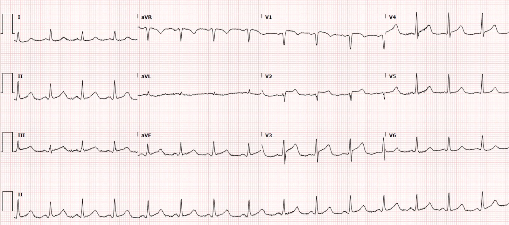
Nhìn chung QRS không thay đổi, nhưng có ST chênh lên mới, lớn ở V1-V4, cũng như ST chênh lên rất nhỏ ở II, III và aVF. So với điện tâm đồ đầu tiên, ta cũng thấy sóng T tối cấp ở tất cả chính các chuyển đạo đó. ST chênh xuống (STD) nhẹ ở V6 là soi gương của ST chênh lên ở các chuyển đạo trước tim bên phải, còn ST chênh xuống dốc xuống và sóng T đảo ngược (TWI) ở aVL là soi gương của ST chênh lên/sóng T tối cấp ở thành dưới. Điều này có giá trị chẩn đoán OMI thành trước và thành dưới/mỏm cho đến khi chứng minh được điều ngược lại. Viêm màng ngoài tim không được có bất kỳ ST chênh xuống hay sóng T đảo ngược soi gương nào. Đây KHÔNG PHẢI ST CHÊNH LÊN LAN TỎA – đây là ST chênh lên khu trú. Điều này gợi ý tắc LAD “vòng qua mỏm” (wraparound) xuống tới thành dưới.
Điện tâm đồ 2 được bác sĩ cấp cứu đọc là nhịp xoang với ST chênh lên khắp các chuyển đạo thành dưới và trước tim.
Bác sĩ khoa cấp cứu đã kích hoạt báo động STEMI (Code STEMI) và điều trị theo kinh nghiệm như hội chứng vành cấp (ACS) – ASA, atorvastatin và heparin truyền tĩnh mạch liên tục. Bác sĩ tim mạch được mời đến tại giường. Bác sĩ tim mạch cho rằng điện tâm đồ nhiều khả năng phản ánh viêm cơ-màng ngoài tim trong bối cảnh COVID19 hơn là nhồi máu cơ tim típ I, và yêu cầu làm siêu âm tim toàn diện cấp cứu. Một siêu âm tim tại giường khẩn, giới hạn đã được thực hiện và cho thấy giảm động vùng trước vách và mỏm với LVEF ở mức bình thường thấp, khoảng 45%.
Xét nghiệm troponin đầu tiên được chỉ định ngay sau điện tâm đồ này, và kết quả sớm trả về tăng rất cao, 3.555 ng/L.
Dù đã yêu cầu siêu âm tim, bề ngoài là để phát hiện rối loạn vận động thành, bác sĩ tim mạch vẫn khăng khăng rằng bệnh cảnh lâm sàng chung của bệnh nhân phù hợp hơn với viêm cơ-màng ngoài tim. Ông từ chối đưa bệnh nhân vào phòng thông tim (cath lab). Bệnh nhân được chuyển lên ICU trong tình trạng vẫn còn đau ngực (lúc này thở oxy dòng cao qua ống thông mũi vì nhu cầu oxy).
Không thấy ghi nhận có ai cân nhắc dùng thuốc tiêu sợi huyết, mọi ghi chép đều chỉ nói rằng bác sĩ tim mạch không cho rằng bệnh nhân bị ACS. Thế nhưng họ lại ghi nhận rằng bác sĩ tim mạch khuyến cáo truyền heparin, nên heparin đã được dùng.
Các điện tâm đồ liên tiếp và troponin được theo dõi diễn tiến.
Điện tâm đồ 3 – Ngày 1, 1750

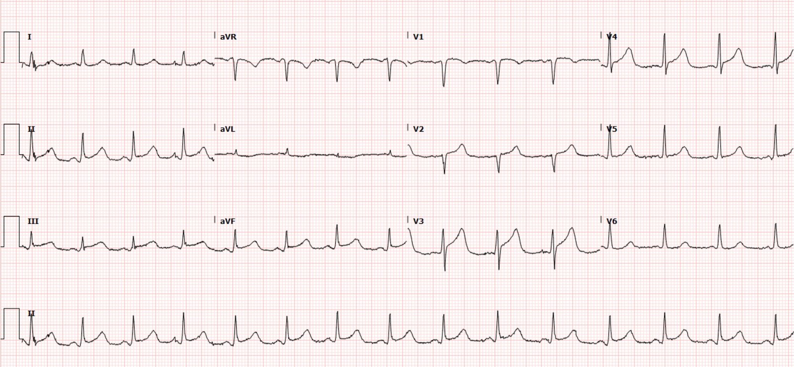
Điện tâm đồ 4 – Ngày 1, 1825

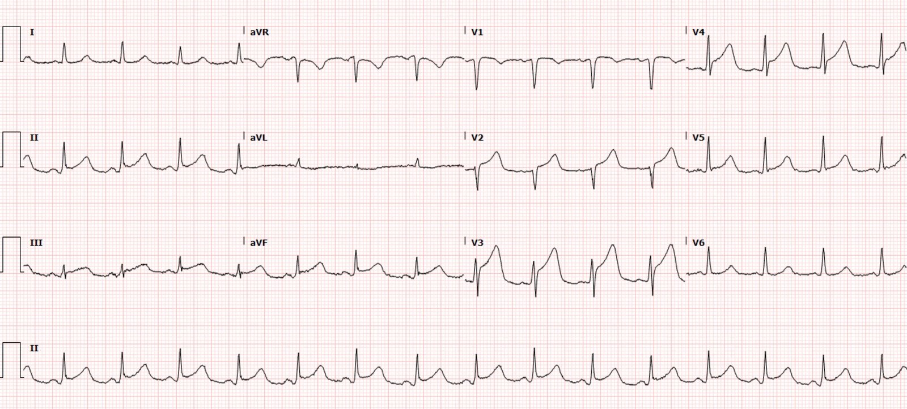
Điện tâm đồ 5 – Ngày 2, 0000

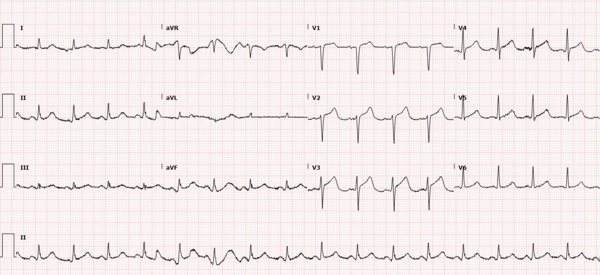
Các lần hs-troponin tiếp theo là 6.892 ng/L, rồi 9.110 ng/L, và sau đó đạt đỉnh 10.126 ng/L trong sáng hôm đó.
Điện tâm đồ 6 – Ngày 2, 0921

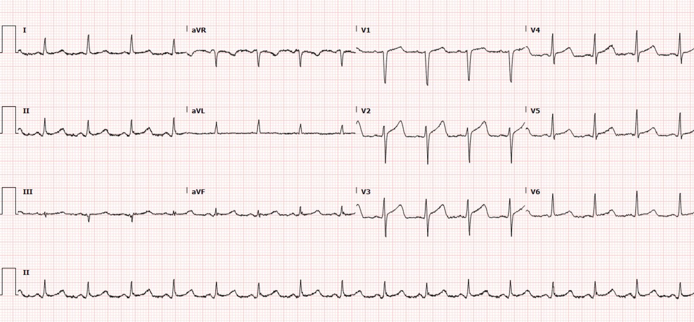
Kết quả siêu âm tim toàn diện có vào Ngày 2 lúc 1048 và nổi bật với LVEF giảm còn 40%, giảm động vùng trước vách đoạn gần và đoạn giữa, và vô động vùng trước vách đoạn xa và mỏm.
Bác sĩ tim mạch vẫn cho rằng bệnh cảnh của bệnh nhân nhiều khả năng là hậu quả của viêm cơ-màng ngoài tim.
Điện tâm đồ 7 – Ngày 3, 1210

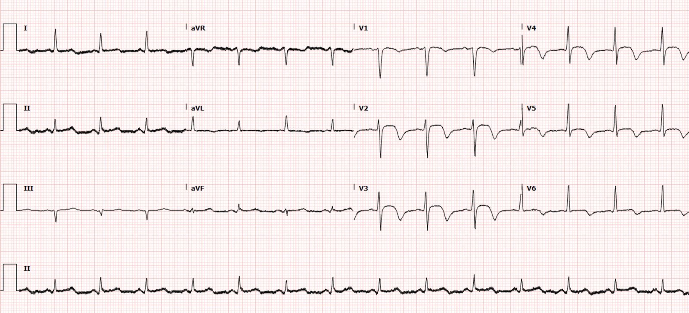
Điều này đôi khi xảy ra khi huyết khối trong một LAD vòng qua mỏm trôi thuyên tắc xuống mỏm, dẫn đến tái tưới máu thành trước nhưng thành dưới vẫn còn tắc.
Điện tâm đồ 7 cho thấy bằng chứng tái tưới máu mạch vành với sóng T đảo ngược ở các chuyển đạo trước tim – phù hợp với trình tự tái tưới máu của OMI. Điện tâm đồ này càng chứng minh rằng đau ngực của bệnh nhân là do ACS chứ không phải do viêm cơ-màng ngoài tim.
Ngày 4:

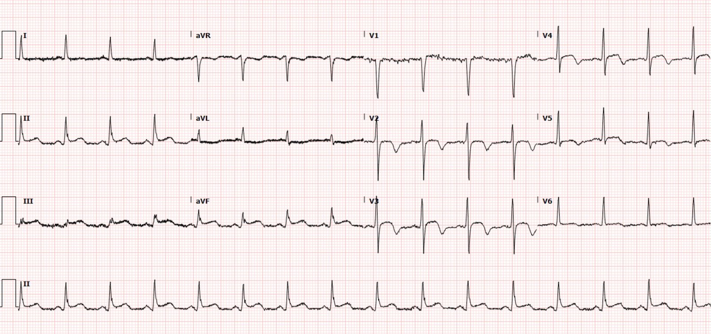

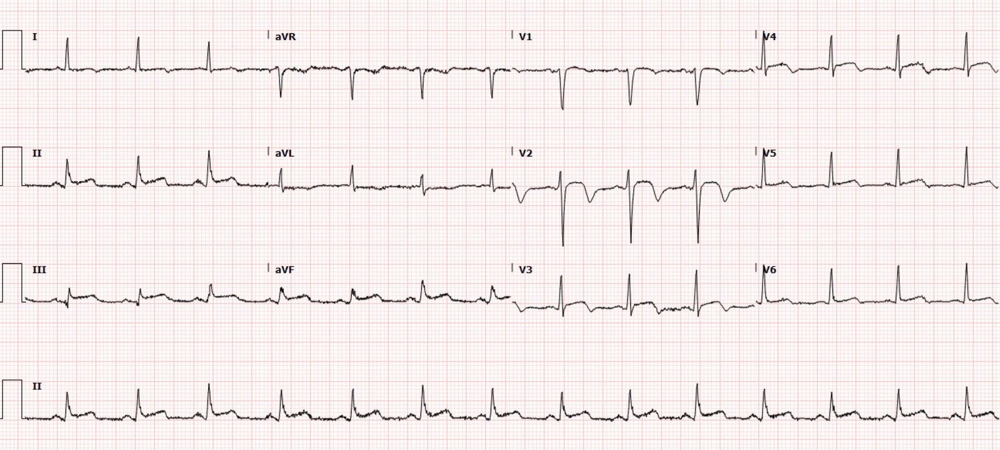
Không có lý do nào được ghi nhận, nhưng troponin bắt đầu được chỉ định lại vào khoảng thời gian này.
Troponin I độ nhạy cao (hs Troponin I):
2.008 ng/L
3.831 ng/L
Ngày 5:

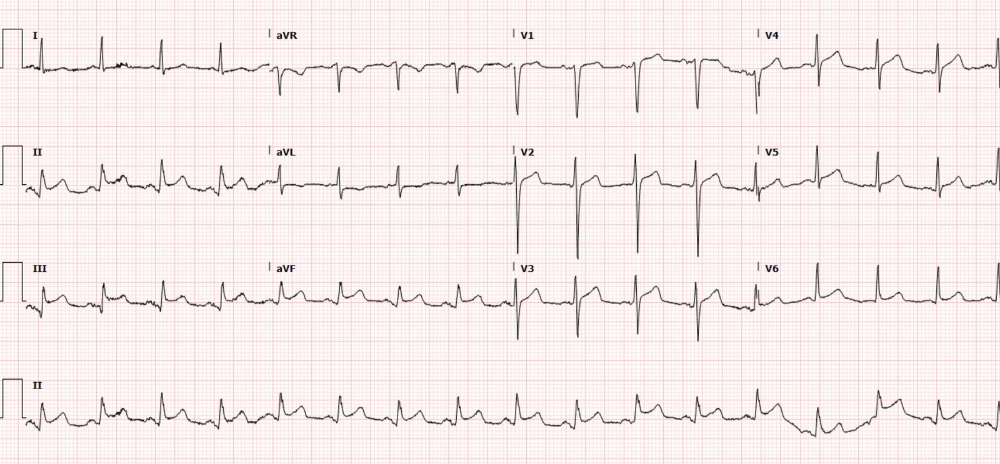
Điều này KHÔNG xảy ra trong viêm cơ tim!!
Có vẻ như cơn đau đã đột ngột chấm dứt, và không còn điện tâm đồ nào được chỉ định trong nhiều ngày.
Troponin I độ nhạy cao (hs Troponin I):
5.040 ng/L
3.933 ng/L
2.517 ng/L
1 tuần sau:

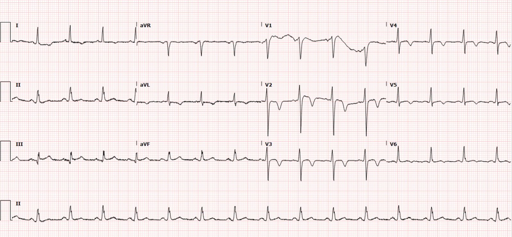
Siêu âm tim nhắc lại được thực hiện vào ngày nằm viện thứ 7 và nổi bật với rối loạn vận động thành (WMA) tồn tại dai dẳng, LVEF 40%. Cũng ghi nhận một huyết khối lớn di động ở mỏm. Thông tim trái được hoãn lại. Bệnh nhân được chuyển sang warfarin để chống đông lâu dài.
Bệnh nhân được bắt đầu điều trị nội khoa theo hướng dẫn (GDMT) cho suy tim phân suất tống máu giảm (HFrEF), atorvastatin và clopidogrel cho nhồi máu cơ tim, và warfarin cho huyết khối thất trái. Bệnh nhân xuất viện vào ngày nằm viện thứ 14 sau khi hồi phục khỏi viêm phổi COVID biến chứng OMI thành trước.
Chẩn đoán cuối cùng:
“STEMI hoặc viêm màng ngoài tim trong bối cảnh HFrEF
Huyết khối thất trái 2/2 (thứ phát do) giảm động cơ tim s/p (sau) STEMI hoặc viêm màng ngoài tim”
1 tháng sau:

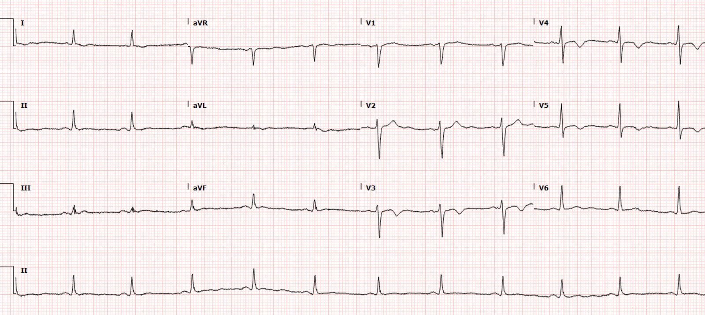
Nhiều tháng sau:

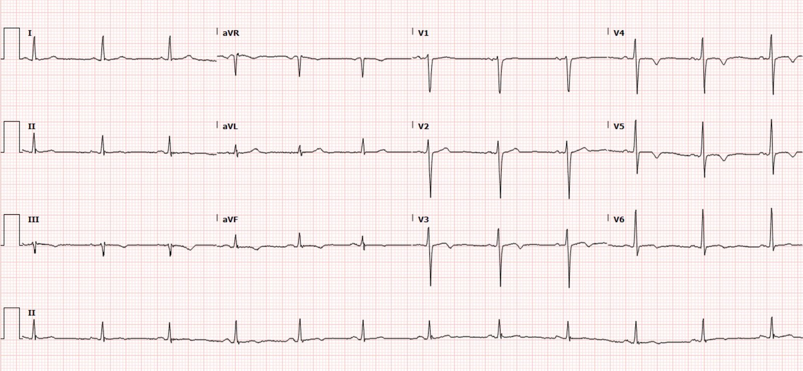
MRI tim được thực hiện ngoại trú 4 tuần sau đợt nằm viện. Hình ảnh cho thấy một khiếm khuyết hồi phục ở vùng dưới vách giữa-mỏm và mỏm, phù hợp với nhồi máu, như trình bày dưới đây.

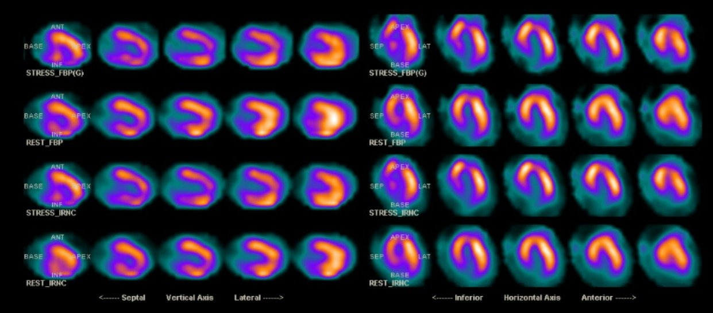
Thông tim được thực hiện 6 tuần sau đợt nằm viện. Thông tim trái nổi bật với hẹp 90% LAD đoạn gần – nơi sau đó đã được đặt một stent phủ thuốc (DES).
Đáng tiếc là kể từ khi xuất viện, bệnh nhân đã gặp nhiều biến chứng phải nhập viện nhiều lần do xuất huyết tiêu hóa trên (UGIB) trong bối cảnh dùng thuốc chống đông và thuốc kháng tiểu cầu. Ca bệnh này nhấn mạnh tầm quan trọng của can thiệp kịp thời bằng PCI cho OMI nhằm giảm tỷ lệ biến chứng sau nhồi máu cơ tim và các biến chứng do điều trị nội khoa.
Những điểm cần học:
Trong ca này, cách xử trí bệnh nhân trái với cả hướng dẫn hiện hành về NSTEMI của ACC/AHA, vốn đưa ra khuyến cáo 1A về thông tim cấp cứu cho NSTEMI có thiếu máu cục bộ tiếp diễn, lẫn tuyên bố năm 2020 của AHA về viêm cơ tim, trong đó nêu:
“ST chênh lên không theo phân bố mạch máu là thường gặp trong viêm cơ tim tối cấp nhưng không nên làm trì hoãn việc đánh giá giải phẫu mạch vành bằng chụp mạch.” Và: “Mặc dù troponin tim huyết thanh (cTn) tăng hầu như luôn hiện diện trong viêm cơ tim tối cấp, nên có ngưỡng thấp để đánh giá bằng chụp mạch vành vì hội chứng vành cấp là nguyên nhân thường gặp nhất của một biểu hiện tim kèm tăng chất chỉ điểm sinh học.”
Viêm cơ tim và bệnh cơ tim takotsubo có thể bắt chước OMI rất giống. Trong một số trường hợp, điện tâm đồ không thể phân biệt các tình trạng này. Tuy nhiên, viêm cơ tim không nên bắt chước tiến trình của OMI, bao gồm tái tưới máu và tắc lại, như chúng ta đã thấy trong ca trên. Vì viêm cơ-màng ngoài tim có tần suất thấp hơn nhiều so với OMI và hậu quả của việc bỏ sót một OMI là nghiêm trọng, việc đặt ngưỡng thấp để chụp mạch sớm là một cách tiếp cận phù hợp trong đánh giá chẩn đoán.
Bối cảnh lâm sàng và các xét nghiệm hỗ trợ ngoài điện tâm đồ có thể giúp phân biệt các tình trạng này. Bệnh nhân này có những đặc điểm gồm troponin tăng nhanh và rối loạn vận động thành khu trú, cả hai tất nhiên đều phải được xem là do OMI cho đến khi chứng minh được điều ngược lại. Chỉ có thể tính đến viêm cơ tim là nguyên nhân của ca này sau khi chụp mạch cấp cứu. Chụp CT mạch vành cấp cứu cũng sẽ là một kế hoạch hợp lý cho bệnh nhân mà chẩn đoán OMI còn nghi ngờ do có thể là viêm cơ tim hoặc takotsubo. Vị bác sĩ tim mạch này dường như có thể phớt lờ gần như mọi đặc điểm lâm sàng khả dĩ, nhưng hãy thử hình dung nếu nhóm điều trị chính đã chụp CT mạch vành và thấy tắc hoặc hẹp mức độ cao LAD.
Một loạt ca bệnh đăng trên NEJM (Bangalore và cs., trong phần tài liệu tham khảo dưới đây) càng làm nổi bật khó khăn trong việc phân biệt OMI với viêm cơ-màng ngoài tim ở bệnh nhân COVID-19. Loạt ca này xác định 18 bệnh nhân COVID19 có các đặc điểm điện tâm đồ gợi ý STEMI. Sau khi đánh giá thêm, 8 bệnh nhân được xác định có OMI và 10 bệnh nhân được xác định có tổn thương cơ tim không do mạch vành. ST chênh lên được xác định là lan tỏa ở 4/10 ca tổn thương cơ tim không do mạch vành và khu trú ở 6/10 ca tổn thương cơ tim không do mạch vành. Loạt ca này nhấn mạnh sự thiếu đặc hiệu của các thay đổi đoạn ST và phân bố của chúng trong việc phân biệt OMI với viêm cơ-màng ngoài tim.
Đáng tiếc là nhiều bệnh nhân sẽ đến viện với các triệu chứng mơ hồ, không thể dùng để phân biệt một cách chắc chắn hai bệnh lý này. Đánh giá xét nghiệm bằng tỷ số CRP/troponin có thể cung cấp thêm một số thông tin. Tỷ số CRP/troponin >500 được ghi nhận có độ đặc hiệu 85% cho viêm cơ-màng ngoài tim và >1000 có độ đặc hiệu 92% cho viêm cơ-màng ngoài tim. Tuy nhiên, hậu quả của việc bỏ sót một OMI là đặc biệt nặng nề, và dùng tỷ số CRP/troponin làm lý do duy nhất để trì hoãn thông tim là đầy rủi ro. Tốt hơn hãy xem viêm cơ tim là một chẩn đoán chỉ có thể đưa ra sau khi chụp mạch và các đặc điểm khác đã loại trừ OMI.
Tài liệu tham khảo:
Bangalore S, Sharma A, Slotwiner A, và cs. ST-segment elevation in patients with COVID-19 – a case series. Tạp chí New England Journal of Medicine, tháng Sáu năm 2020; 382: 2478-2480. https://www.nejm.org/doi/full/10.1056/NEJMc2009020
Bangalore S, Sharma A, Slotwiner A, và cs. ST-segment elevation in patients with COVID-19 — a case series; Supplementary appendix (Phụ lục bổ sung). Tạp chí New England Journal of Medicine, năm 2020; 382:2478-80. https://www.nejm.org/doi/suppl/10.1056/NEJMc2009020/suppl_file/nejmc2009020_appendix.pdf
Circulation 2020: Tuyên bố của ACC/AHA về xử trí viêm cơ tim tối cấp (ACC/AHA Statement on Management of Fulminant Myocarditis):
https://www.ahajournals.org/doi/10.1161/CIR.0000000000000745
https://journals.plos.org/plosone/article?id=10.1371/journal.pone.0248365 (bài báo trên tạp chí PLOS ONE)

===================================
BÌNH LUẬN CỦA TÔI, bởi KEN GRAUER, MD (25/7/2022):
===================================
Một phần bàn luận xuất sắc về ca hôm nay của BS. Parker Hambright — với đóng góp của các BS. Meyers, Smith và McLaren. Dù có thể bị lặp lại — tôi xin nhấn mạnh lại các điểm MẤU CHỐT đã được nêu ra về việc phân biệt OMI cấp với viêm cơ tim.
- Tự bản thân nó, điện tâm đồ ban đầu không thể phân biệt một cách đáng tin cậy giữa OMI cấp với viêm cơ tim. Đơn giản là các dấu hiệu điện tâm đồ của 2 thực thể này chồng lấp nhau quá nhiều để có thể đưa ra chẩn đoán xác định dựa trên một bản ghi duy nhất.
- Sử dụng các điện tâm đồ liên tiếp có thể giúp phân biệt — như đã thấy trong ca hôm nay với sự xuất hiện của sóng T tái tưới máu. Đáng tiếc là dấu hiệu điện tâm đồ này không được thấy cho đến điện tâm đồ #7 (ghi vào Ngày-3 lúc 12:10) — vào thời điểm đã quá xa so với khoảng thời gian mà PCI có thể còn mang lại lợi ích.
- Từ rất lâu trước dấu hiệu điện tâm đồ “tố cáo” là sóng T tái tưới máu — chẩn đoán giả định (presumptive diagnosis) là OMI cấp cho đến khi bạn chứng minh được điều ngược lại đã rõ ràng nhờ tiến triển khu trú của các dấu hiệu điện tâm đồ (nhận ra được ngay khi có điện tâm đồ #2 để so sánh với điện tâm đồ #1).
- Siêu âm tim tại giường càng ủng hộ thêm cho tổn thương khu trú (đóng vai trò như một chỉ định bổ sung để giả định là OMI cấp cho đến khi bạn chứng minh được điều ngược lại).
- MRI tim có thể phân biệt OMI với viêm cơ tim — nhưng phương tiện này sẽ không sẵn có cho nhiều (phần lớn) người hành nghề một cách đủ kịp thời để tác động tích cực đến điều trị.
- ĐIỀU CỐT LÕI: Như các BS. Hambright, Meyers, Smith & McLaren đã nhấn mạnh ở trên — có những lúc thông tim có thể là cách duy nhất để phân biệt chắc chắn giữa OMI với viêm cơ tim. Bài học lâm sàng là đẩy nhanh việc nhận diện những bệnh nhân nào cần thông tim kịp thời — bởi chúng ta nhận thức rằng nếu không thông tim kịp thời, đơn giản là chúng ta có thể không phân biệt được OMI cấp với viêm cơ tim trong những ca khó.
Điều gì đã xảy ra trong ca hôm nay:
Đáng tiếc là — chẩn đoán OMI cấp đã bị chậm trễ đáng kể trong ca hôm nay vì những sơ suất đã được chỉ ra ở trên trong phần bàn luận của BS. Hambright. Để giúp nhận ra rõ những sơ suất này — tôi nghĩ đáng để XEM lại một lần nữa 2 bản ghi đầu tiên trong ca hôm nay (Hình 1):

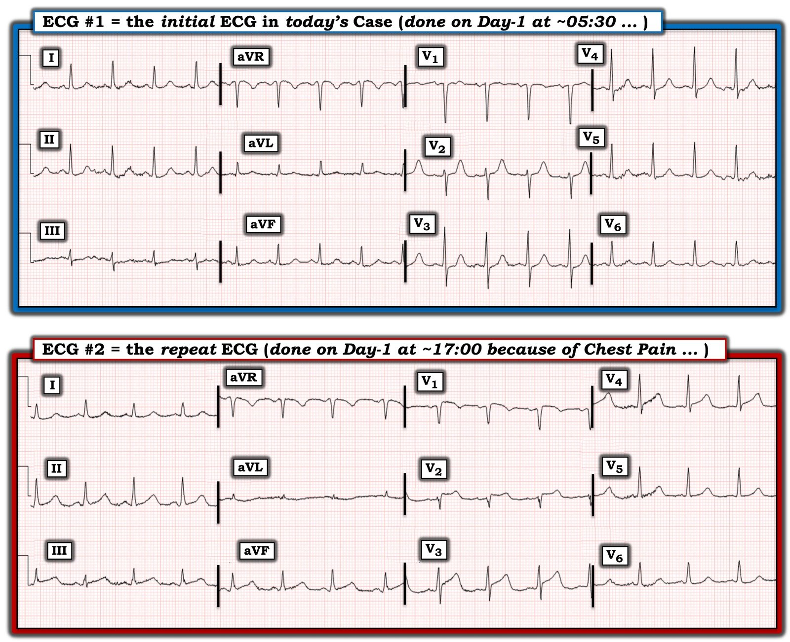
So sánh 2 điện tâm đồ trong Hình 1:
Điểm tôi muốn nhấn mạnh về điện tâm đồ #1 — là đây không phải một bản ghi “bình thường”. Tôi hoàn toàn đồng ý với BS. Hambright rằng ST chênh xuống tinh tế-nhưng-có-thật ở ít nhất 6 chuyển đạo (kèm gợi ý ST chênh lên ở chuyển đạo aVR) — phù hợp với thiếu máu cục bộ dưới nội tâm mạc lan tỏa (điều không có gì bất ngờ trong bối cảnh lâm sàng suy hô hấp cấp liên quan đến Covid).
- Tôi muốn bổ sung rằng tuy không chênh xuống — nhưng đoạn ST ở chuyển đạo V2 của điện tâm đồ #1 thẳng đuỗn bất thường — với một góc gập tại điểm nó nối vào sóng T. Xét kích thước khiêm tốn của phức bộ QRS ở chuyển đạo này — tôi cho rằng sóng T ở chuyển đạo V2 cao-hơn-dự-kiến, và trong bối cảnh đoạn ST thẳng đuỗn — có thể là tối cấp.
- Do bệnh Covid nặng có liên quan đến các rối loạn tim cấp tính (như viêm cơ tim và OMI) — những dấu hiệu điện tâm đồ này trên bản ghi ban đầu (ngay cả khi lúc đó không có đau ngực) dường như đã đáng để: i) Chỉ định troponin (điều đã không được làm trong ca hôm nay cho đến sau điện tâm đồ #2); và, ii) Ghi lại điện tâm đồ sớm hơn nhiều so với những gì đã làm (điện tâm đồ #2 mãi 11 1/2 giờ sau mới được ghi — và chỉ vì bệnh nhân đau ngực).
- Tôi không khỏi tự hỏi liệu sóng T quá cao ở chuyển đạo V2 của điện tâm đồ #1 có thể đã báo hiệu sự khởi đầu của tình trạng tắc LAD ở bệnh nhân này hay không.
Tôi chọn đặt điện tâm đồ #1 và #2 cạnh nhau trong cùng Hình 1 — vì những thay đổi xảy ra giữa 2 bản ghi này quá nổi bật. Hầu như chuyển đạo nào cũng cho thấy sự tiến triển!
- Dù “mức độ” ST chênh lên ở các chuyển đạo thành dưới của điện tâm đồ #2 không lớn — đây chắc chắn là một thay đổi ST-T động (dynamic) khi bạn xét đến việc các đoạn ST ở điện tâm đồ #1 dẹt đến mức nào.
- Mặc dù QRS ở chuyển đạo aVL của điện tâm đồ #2 rất nhỏ — sự thay đổi từ sóng T dương ở chuyển đạo này trên điện tâm đồ #1 — sang ST-T âm trên điện tâm đồ #2 là một dấu hiệu thực sự của thay đổi soi gương.
- Mức độ các đoạn ST ở chuyển đạo V3 và V4 của điện tâm đồ #2 đã chênh lên — thậm chí còn nhiều hơn những gì người ta có thể nghĩ khi tính đến điểm xuất phát là ST chênh xuống ở các chuyển đạo này vốn có trên điện tâm đồ #1.
- Ngay cả các đoạn ST dẹt ở chuyển đạo V5,V6 của điện tâm đồ #2 cũng thể hiện một mức chênh lên nào đó của đoạn ST khi xét đến ST chênh xuống vốn có trên điện tâm đồ #1.
Kết luận rút ra từ việc so sánh điện tâm đồ #2 với bản ghi ban đầu trong ca hôm nay là thuyết phục:
- Bệnh nhân bị bệnh nặng liên quan đến Covid. Vì vậy bệnh nhân có nguy cơ mắc các rối loạn tim cấp tính như viêm cơ tim và OMI. Trách nhiệm phân biệt giữa viêm cơ tim cấp với OMI thuộc về chúng ta.
- Dù một điện tâm đồ đơn lẻ có thể không phân biệt được một cách đáng tin cậy giữa 2 thực thể này — bệnh nhân có đau ngực mới xuất hiện và đã tiến triển rõ ràng ST chênh lên khu trú với các thay đổi ST-T động ở nhiều chuyển đạo.
- ĐIỀU CỐT LÕI: Ở thời điểm này của ca bệnh, chưa chắc chắn 100% bệnh nhân bị viêm cơ tim cấp hay OMI cấp cũng không sao (lúc đó chưa làm siêu âm tim lẫn troponin). Dù thế nào đi nữa — lẽ ra đã phải thấy rõ rằng cần thông tim kịp thời để chẩn đoán xác định (vì nếu không thì bạn sẽ không thể loại trừ OMI cấp).